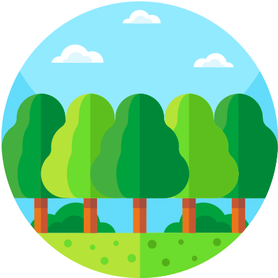
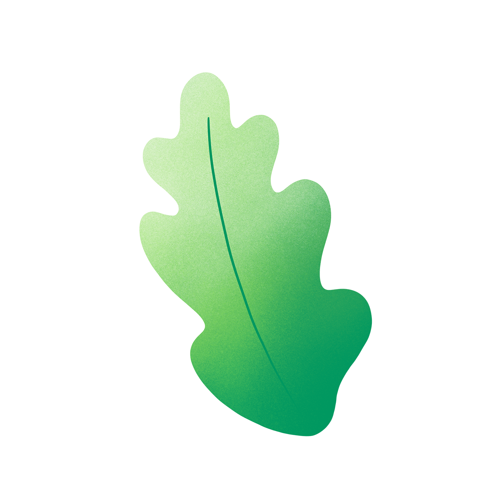
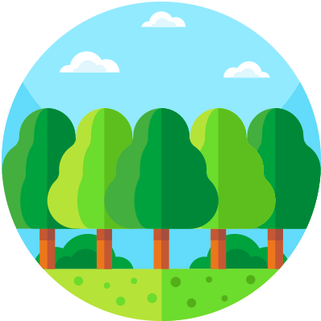
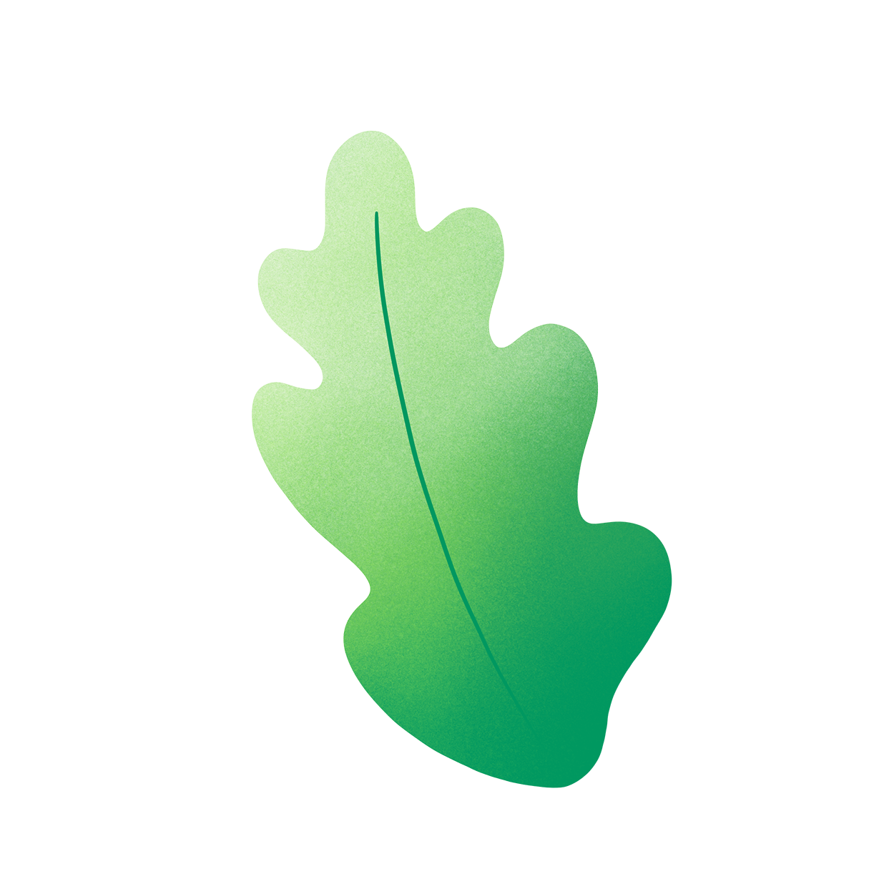
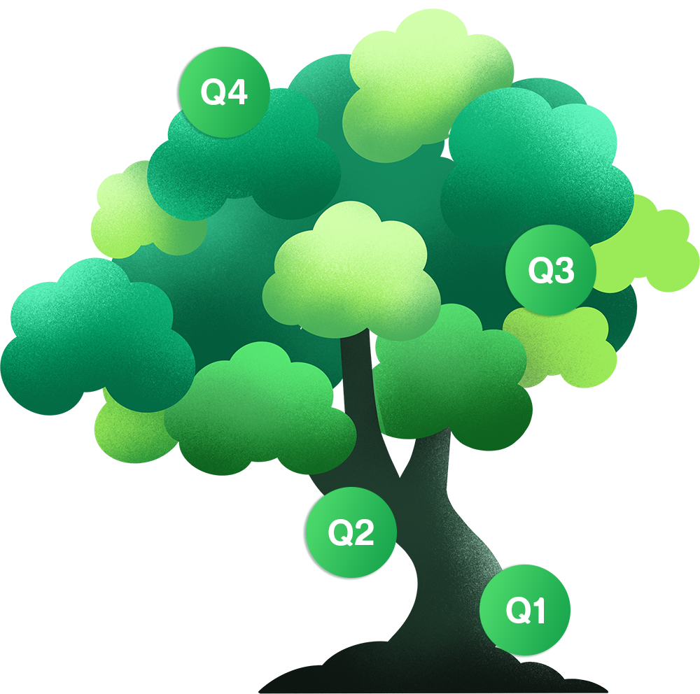
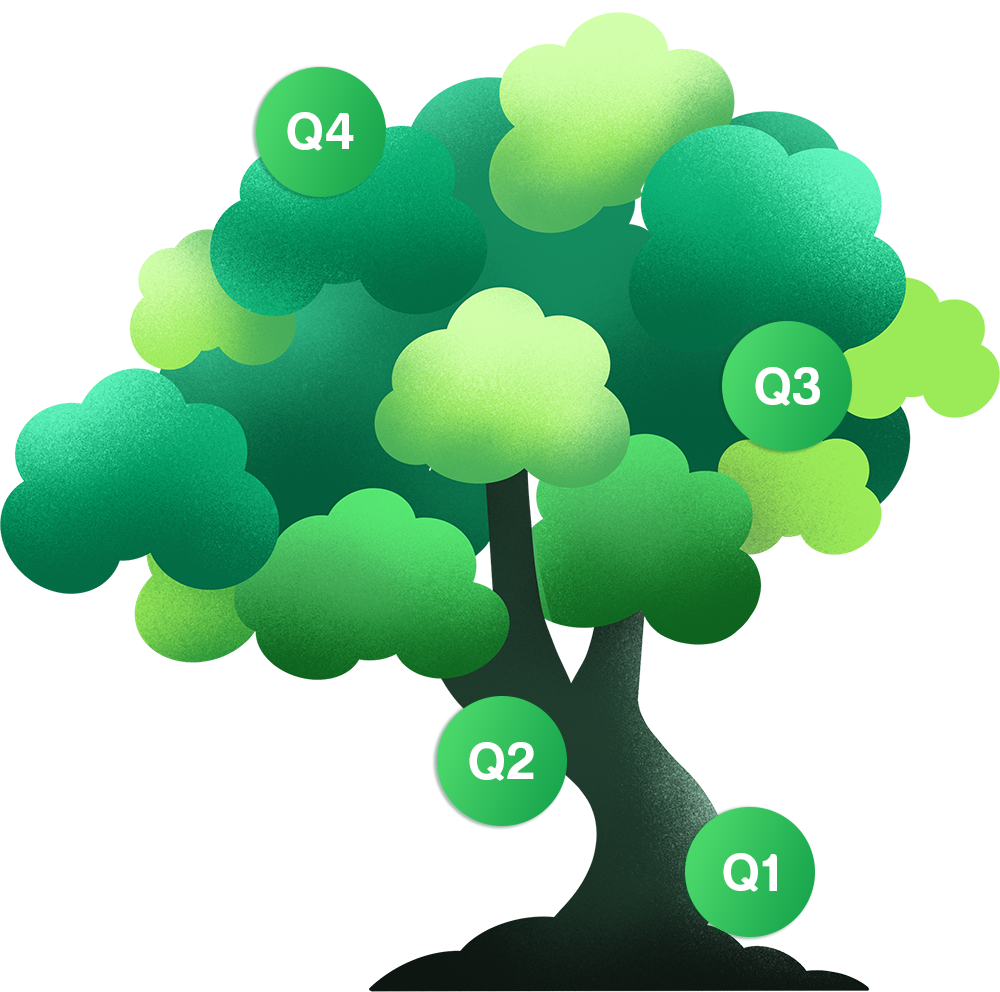

Deforestation
The very essence of our lives lies in helping and caring for others. We are all fragile beings and make mistakes. GiveEarth.io understands the importance of helping others and making each other’s lives better. We humans have not been kind to our planet, not valuing the little things that the earth has given us and taking things for granted. This behavior has led us to the issue of climate change. We have cut down so many trees and have deforested the earth’s surface to much extent that the earth cannot take it anymore. Many of you want to save the planet but give up thinking “I alone cannot change the world”. We are here to support you in this cause. With GiveEarth.io you can help make a difference and become a part of a bigger cause. Help us replant deforested area by donating to charity that buys, owns and protects land that was deforested for wood. The program’s only intention is to help the earth regrow its forests and save the upcoming generations. You can participate in this charitable cause and save not only yourself but many other generations to come. As our main aim to help save the environment, we make sure the process is easier for anyone to come and join us in our cause of saving the biodiversity and creating a healthier future. It is important to realize the fact the environmental change is real and the planet is being deforested at an alarming rate which is not healthy for the environment. If you are not going to stand against deforestation, who else will? It always starts small but these small steps are what makes a bigger impact. Join us in our journey for a better future for not only for yourself but also for the generations to come and become a part of something bigger much than yourself. GiveEarth.io is your portal to make these changes that will benefit for a healthier planet
Ocean Cleanup
The earth’s oceans are being dumped with plastic and radioactive waste which is causing the ocean to be polluted at a much rapid pace. In such crisis, many of us want to do something about it but are unable to do so. Marine life has been affected severely over the past few decades with plastic waste and ocean pollution. We humans are cruel beings and do not seem to care about other species besides ourselves. The plastic waste in the oceans has increased drastically and many marine animals specially turtles and fish have been affected by it. We are here to change this by cleaning up the ocean plastic through your support. We will donate to charity programs that aim to clean the earth’s oceans by filtering plastic. It is a difficult but an important mission and we cannot do it without your support. Many of us want to make a difference but lose hope because we think we alone cannot make a difference. For this reason, support our charity and help save the marine life and the ocean. Each year, millions of fishes end up losing their lives or are severely injured by either eating plastic or getting stuck in it. This cruel behavior needs to be stopped and we alone cannot do this. No one has the right or the authority to harm the earth’s oceans and marine life as they are also living beings. Help us by donating to our charitable cause and play your part in cleaning the oceans from the plastic pollutants for a better tomorrow. We will donate to charity programs that clean and filter the plastic from the ocean. If you are looking to make a difference and want to improve the world, help us as it is not an easy road to walk alone and together, we can accomplish much more.

Bee Charity Programs
Bees play an important role in our survival as they are the main source of pollination. If bees go extinct, the chances of our survival will become almost zero. The reason for this being is that according to United Nations Environment Program, almost 75 percent of the worlds’ food crops depend on pollinators. If bees go extinct, we shall lose 75 percent of our crops and inevitably, we will die due to hunger. There has been a severe decline in the population of the bees not only in North America but also in South America, Asia and Europe. There are many reasons for this such as pesticide use, climate change and habitat loss. Keeping in view of the importance of the bees and the role they play in making our crops grow, it is our responsibility to protect them and save them from extinction. We believe that you can make a difference. We believe that you want to play your part but a single person alone cannot fight all the factors that are causing the bees to die and that’s why we have come up with a bee charity program. The main aim of our charity program is to support and work with organizations who create bee fields. Bee fields are playing an important role in protecting and growing the population of the bees. We shall ensure that our donations will be used to conserve the bees. It is not an easy task to save the bees and requires a lot of patience and hard work. This why we are inviting you join us in this important cause to save the planet’s crops. By holding GiveEarth.io, you can become a part of something much bigger and can help save the world. We cannot walk this road alone and that is why we are inviting you to join us so that we can walk this difficult road together. Hold GiveEarth.io now to save the bees and save the future of our planet.
 
